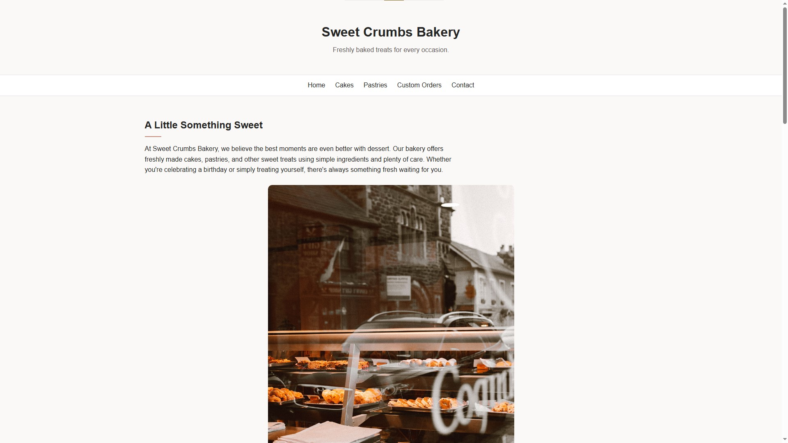
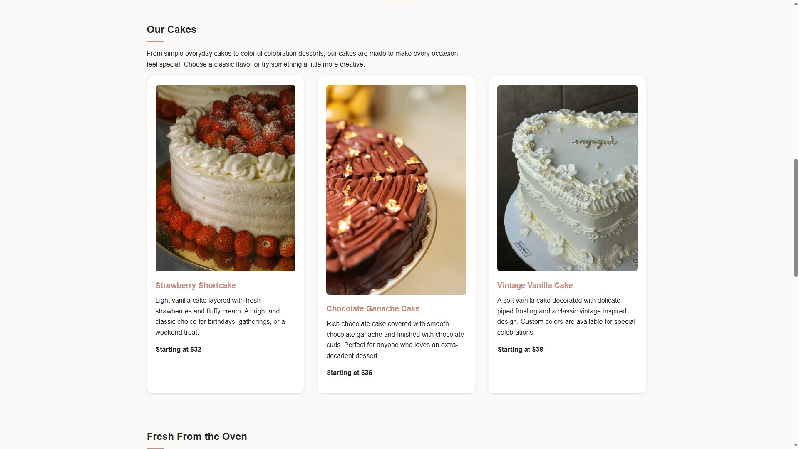
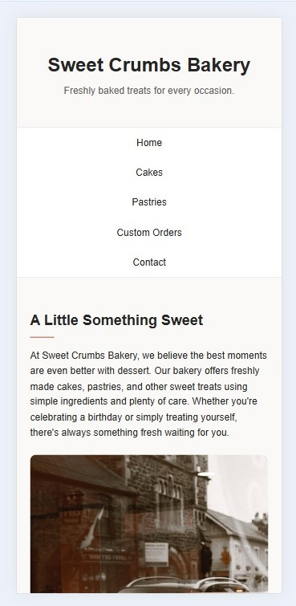

01 — Sweet Crumbs Bakery
HTML · CSS · Responsive Layout
Sweet Crumbs Bakery gave me the opportunity to explore visual design and problem-solving through a bakery website. I especially enjoyed refining the visual style and organizing the cake selections into cards. This project helped me practice using layout techniques to present information clearly while maintaining a consistent design. I also worked through responsive design challenges with guidance from my peers and instructors, learning how to adapt a website for different screen sizes.
View the Sweet Crumbs Bakery project on GitHub Pages.


